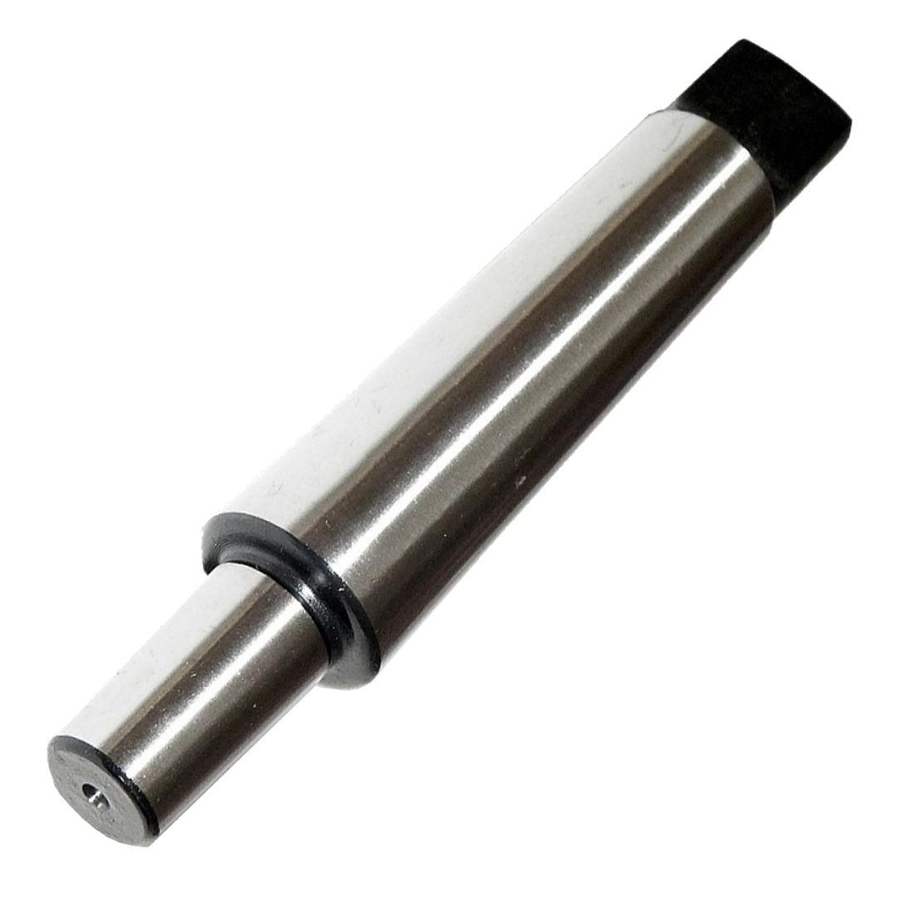

CMMT3
123.63

Drill
chuck morse taper holder for the adaption of a drill chuck for your drill or mill.
Simply fit the drill chuck onto the B16 side and away you go.
Installation Info
Clean both tapers of all grease and grit. With the chuck jaws completely
retracted into the chuck and using a thin piece of wood to protect the chuck nose,
tap the chuck into place on the spindle/taper adaptor.
To
remove chuck from arbor
Insert wedges between the back of the chuck and the shoulder of the arbor as shown
in the picture on the right.
By tapping these wedges with a hammer or applying force in a bench vice, the wedges
will force the chuck off the arbor shaft.